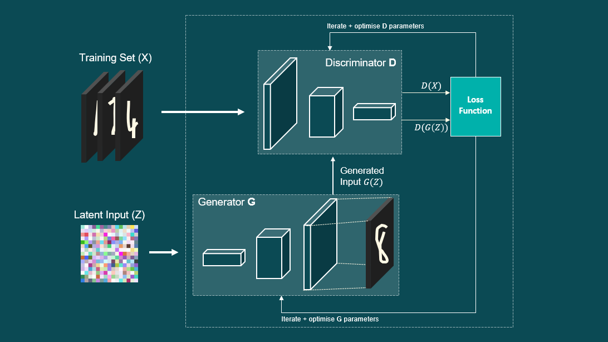

4 - Generative Adversarial Network¶
github.com/samph4
~
Preface¶
This example will be more in-depth than the first few, but a lot of the principles that we have already applied also apply here. As always, we’ll go through it step by step and I’ll do my best to explain each part so that it makes sense and is as easy to follow as I can make it. In this final example, we will be looking at Generative Adversarial Networks - affectionately known as GANs. The concept of GANs were first introduced by Ian Goodfellow and his team in 2014 (https://arxiv.org/abs/1406.2661), where they “proposed a new framework for estimating generative models via an an adversarial process”. I’ll get into this in much more detail, but essentially what is happening here is that we are going to train two neural networks (that will be adversaries), that will compete against one another in order to improve. One will be reffered to as the Discriminator and the other will be known as the Generator. We combine both of these networks to form a combined model known as the GAN for training. Once training has been completed, we want to be able to use the trained Generator network independently to generate new things!
The image above looks rather unassuming, it is simply a row of portraits of four different people. The interesting thing however, is that none of these people actually exist. They are not real. Each of these images has been generated by a Generative Adversarial Network known as StyleGAN. StyleGAN is a sophisticated GAN that has been curated and trained by NVIDIA and represents the state-of-the-art results in data-driven unconditional generative image modelling and is an impressive testament as to the possibilities of Generative Networks. Here is another video that demonstrates the capabilities of these methods (which is only 2 minutes long so I recommend you watch it because it’s v cool) - https://www.youtube.com/watch?v=p5U4NgVGAwg. With that being said, lets take a closer look as to how these things actually work.

Define GAN Model¶
Discrimnator¶
# define the standalone discriminator model
def define_discriminator(lr = 1, n_inputs=2):
model = Sequential()
model.add(Dense(25, kernel_initializer='he_uniform', input_dim=n_inputs))
model.add(LeakyReLU(alpha=0.01))
model.add(Dense(15, kernel_initializer='he_uniform'))
model.add(LeakyReLU(alpha=0.01))
model.add(Dense(15, kernel_initializer='he_uniform'))
model.add(LeakyReLU(alpha=0.01))
model.add(Dense(5, kernel_initializer='he_uniform'))
model.add(LeakyReLU(alpha=0.01))
model.add(Dense(1, activation='sigmoid'))
# compile model
adam = optimizers.Adam(lr, beta_1 = 0.9, beta_2 = 0.99, amsgrad = False)
model.compile(loss='binary_crossentropy', optimizer=adam, metrics=['accuracy'])
return model
Generator¶
# define the standalone generator model
def define_generator(latent_dim, n_outputs=2):
model = Sequential()
initial = initializers.RandomUniform(minval = 0.05, maxval = 1.5, seed = 30)
model.add(Dense(11, activation='relu', kernel_initializer=initial, input_dim=latent_dim))
model.add(LeakyReLU(alpha=0.01))
model.add(Dense(11, activation='relu', kernel_initializer=initial, input_dim=latent_dim))
model.add(LeakyReLU(alpha=0.01))
model.add(Dense(n_outputs, activation='linear'))
return model